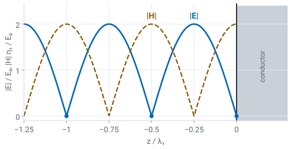

L38 - Normal Incidence#
Normal Incidence
Today a plane wave meets a boundary head-on, and the boundary conditions decide how much of it reflects.
Lesson 38 · Module 4: Dynamic Fields · Maj Ellis · Dr. Neil Rogers
Learning Objectives
- I can determine the reflection and transmission of UPW at a boundary for Transverse Electric (TE) and Transverse Magnetic (TM) waves, using boundary conditions.
Lesson 37 described a uniform plane wave in a single, unbounded medium. Real waves meet boundaries: air and glass, air and seawater, air and a metal wall. Today we send a plane wave straight at a flat boundary between two lossless media and apply the tangential boundary conditions of Lessons 24 and 31. Two equations fix the two unknowns, the reflection coefficient \(\Gamma\) and the transmission coefficient \(\tau\), and the results have exactly the form of Lesson 6’s coefficients for a terminated transmission line, with the intrinsic impedances of the two media in place of \(Z_0\) and \(Z_L\). The reflected wave adds to the incident wave to form a standing wave. Poynting’s theorem, derived today from Maxwell’s equations, gives the power a wave carries, and the power splits between the two media with none lost at the boundary. Lessons 39 and 40 tilt the wave, which is where the TE and TM cases of the objective separate.
Where We Were
Lesson 37: a uniform plane wave traveling in \(+z\):
Lesson 37 found the plane-wave solution of Maxwell’s equations in a lossless, source-free medium. The electric field, the magnetic field, and the direction of travel \(\hat{\mathbf{k}}\) are mutually perpendicular, and the ratio of the electric field to the magnetic field is the intrinsic impedance \(\eta\), in ohms, set by the medium alone. Lesson 6 quoted it for a line’s dielectric, and Lesson 37 derived it. In free space, \(\eta_0 = 376.7\ \Omega\). The last relation gives \(\widetilde{\mathbf{H}}\) for a wave traveling in any direction: for a wave traveling in \(-z\), \(\hat{\mathbf{k}} = -\hat{\mathbf{z}}\), and the magnetic field reverses relative to the electric field. We use that rule below for the reflected wave.
Three Waves at a Boundary
![The boundary at z equals zero separates medium 1, with epsilon 1, mu 1, and eta 1, on the left from medium 2, with epsilon 2, mu 2, and eta 2, on the right. In medium 1 an incident wave travels in the plus z direction with its electric field E i up along x and its magnetic field H i out of the page, and a reflected wave travels in the minus z direction with E r up along x and H r into the page. In medium 2 a transmitted wave with a shorter wavelength travels in the plus z direction with E t up along x and H t out of the page. An axis key shows x up, z to the right, and y out of the page.](../../viz/img/L38-geometry.svg)
Medium 1 holds the incident and reflected waves; medium 2 holds the transmitted wave.
The plane \(z = 0\) separates medium 1, \(z < 0\), from medium 2, \(z > 0\). Both are lossless, with permittivities \(\epsilon_1\) and \(\epsilon_2\), permeabilities \(\mu_1\) and \(\mu_2\), and intrinsic impedances \(\eta_1\) and \(\eta_2\). An incident wave arrives from the left, traveling in \(+z\) with its electric field along \(\hat{\mathbf{x}}\). Because it strikes the boundary along the normal, this is normal incidence. Part of the wave reflects and travels back in \(-z\); the rest continues into medium 2 as the transmitted wave. The figure draws each wave’s electric field along \(\hat{\mathbf{x}}\); the reflected wave’s magnetic field points into the page, opposite the other two, because the reflected wave travels the other way. All three waves share the frequency \(\omega\) of the source. Each medium has its own phase constant, so the transmitted wave has a different wavelength, shorter in the figure because medium 2 has the larger permittivity. This is the geometry of Lesson 6 turned into fields: the load sits at \(z = 0\), and the source is far to the left.
The Fields in Each Medium
We know the incident wave, with amplitude \(E_0\), and write the other two with unknown amplitudes. The reflection coefficient \(\Gamma\) is the ratio of the reflected electric field to the incident electric field at the boundary, and the transmission coefficient \(\tau\) is the ratio of the transmitted electric field to the incident electric field there. The reflected wave travels in \(-z\), so its phase term is \(e^{+j\beta_1 z}\), and with \(\hat{\mathbf{k}} = -\hat{\mathbf{z}}\) its magnetic field is
The reflected and transmitted electric fields stay along \(\hat{\mathbf{x}}\): the boundary conditions below act on each component separately, and nothing in them produces a \(y\) component from an \(x\) one. The total field in medium 1 is the sum of the incident and reflected waves; in medium 2 it is the transmitted wave alone.
Boundary Conditions for Changing Fields

Faraday and Ampere–Maxwell around the loop:
Lessons 24 and 31 derived the tangential conditions for static fields from a thin rectangular loop of width \(W\) and height \(h\) that straddles the boundary, the loop of Lesson 31’s figure. With time-varying fields the two laws gain a term each. Faraday’s law, from Lesson 33, adds the rate of change of the magnetic flux through the loop; the Ampere–Maxwell law, from Lessons 33 and 34, adds the displacement current through it. Both new terms are proportional to the loop’s area \(Wh\), and the fields in them stay finite, so both vanish as \(h \to 0\), just as the two short sides of the loop did. The static conditions therefore hold unchanged at every instant: tangential \(\mathbf{E}\) is continuous, and tangential \(\mathbf{H}\) jumps only by a surface current. Between two ordinary dielectrics \(J_s = 0\), so tangential \(\mathbf{H}\) is continuous too. At normal incidence every field is tangential, so these two conditions are all we need.
Solving for the Coefficients
At \(z = 0\), with \(J_s = 0\):
At \(z = 0\) every phase term equals one. The first line is the continuity of tangential \(\mathbf{E}\): the \(x\) component just left of the boundary, incident plus reflected, equals the \(x\) component just right of it, the transmitted wave. The second line is the continuity of tangential \(\mathbf{H}\): the \(y\) component in medium 1 is \(E_0/\eta_1\) from the incident wave minus \(\Gamma E_0/\eta_1\) from the reflected wave, and it equals \(\tau E_0/\eta_2\) in medium 2. Dividing out \(E_0\) and substituting \(\tau = 1 + \Gamma\) from the first line into the second leaves one equation in \(\Gamma\). Collecting the \(\Gamma\) terms on one side gives \(\Gamma\left(\eta_2 + \eta_1\right) = \eta_2 - \eta_1\), and adding one gives \(\tau\). When the two media have the same intrinsic impedance, \(\Gamma = 0\), and the wave passes through as if the boundary were not there.
The Transmission-Line Picture
Lesson 6: a line |
Today: a boundary |
|---|---|
\(\widetilde{V}\), \(\widetilde{I}\) |
\(\widetilde{E}_x\), \(\widetilde{H}_y\) |
\(Z_0\) |
\(\eta_1\) |
\(Z_L\) |
\(\eta_2\) |
\(\Gamma = \frac{Z_L - Z_0}{Z_L + Z_0}\) |
\(\Gamma = \frac{\eta_2 - \eta_1}{\eta_2 + \eta_1}\) |
\(\tau = 1 + \Gamma\) |
\(\tau = 1 + \Gamma\) |
The two results have the same form because each problem is the continuity of two quantities whose ratio the termination sets. On the line, the voltage and current are continuous at the load, and the load sets their ratio. At the boundary, tangential \(\mathbf{E}\) and \(\mathbf{H}\) are continuous, and medium 2 sets their ratio. Medium 2 acts as a load equal to its own intrinsic impedance \(\eta_2\), because the transmitted wave travels away and never returns, just as an infinitely long line looks like its characteristic impedance, as Lesson 5 showed. Everything Lesson 6 derived from \(\Gamma\) carries over: the standing wave, its ratio, and the split of power. The relation \(\tau = 1 + \Gamma\) is the \(T = 1 + \Gamma\) of Lesson 6, whose two-port counterpart, \(S_{21}\), the teams measured on the bench in Lesson 16. For two nonmagnetic media, \(\mu_1 = \mu_2 = \mu_0\), the impedances go as \(1/\sqrt{\epsilon_r}\), and
Worked Example: Air to a Dielectric
\(E_0 = 1\) V/m at 1 GHz, from air into \(\epsilon_{r2} = 2\):
Worked example — the fields on both sides of the boundary
Medium 1 is free space, and medium 2 is a nonmagnetic dielectric with \(\epsilon_{r2} = 2\). The phase constants are \(\beta_1 = \omega\sqrt{\mu_0\epsilon_0} = 20.96\) rad/m and \(\beta_2 = \beta_1\sqrt{2} = 29.64\) rad/m, so the wavelength is 30.0 cm in air and 21.2 cm in the dielectric. The impedances give \(\Gamma = -0.172\): the reflected electric field is 17.2% of the incident field and inverted at the boundary, because medium 2 has the smaller impedance, like a load smaller than \(Z_0\) in Lesson 6. The transmitted field is \(\tau E_0 = 0.828\) V/m.
The magnetic fields check the second boundary condition. The incident wave carries \(E_0/\eta_1 = 2.65\) mA/m. The reflected wave carries \(-\Gamma E_0/\eta_1 = +0.455\) mA/m along \(\hat{\mathbf{y}}\): the minus sign of the reflected magnetic field and the minus sign of \(\Gamma\) cancel. Their sum, 3.11 mA/m, equals the transmitted \(\tau E_0/\eta_2 = 0.828/266.4 = 3.11\) mA/m, so tangential \(\mathbf{H}\) is continuous, as it must be. The transmitted electric field is smaller than the incident one, but the transmitted magnetic field is larger, because medium 2 has the lower impedance.
The Standing Wave in Medium 1
Air to \(\epsilon_{r2} = 2\): SWR \(= 1.41\), with a minimum at the boundary.
The total electric field in medium 1 is the incident wave plus the reflected wave. Factoring out \(e^{-j\beta_1 z}\), whose magnitude is one, leaves the same expression Lesson 6 found for the voltage on a terminated line, and Lesson 6’s expansion of its squared magnitude carries over line for line. The magnitude swings between \(E_\text{max}\), where the two waves add in phase, and \(E_\text{min}\), where they subtract, and the pattern repeats every half wavelength in medium 1. The ratio of the two is the standing wave ratio. For two lossless media \(\Gamma\) is real. When \(\eta_2 < \eta_1\), \(\Gamma\) is negative, and the field has a minimum at the boundary; when \(\eta_2 > \eta_1\), it has a maximum there. In the worked example the field runs from 0.828 V/m at the boundary to 1.172 V/m a quarter wavelength, 7.5 cm, to the left, and the SWR equals \(\eta_1/\eta_2 = \sqrt{2}\), just as the VSWR of a real load equals \(Z_0/Z_L\) when the load is smaller than \(Z_0\). Medium 2 holds a single traveling wave, so its field magnitude is the same everywhere.
Explore: A Wave at a Boundary
The widget sends a 1 V/m plane wave from medium 1, on the left, into medium 2, on the right, both nonmagnetic, with relative permittivities you set with the two sliders. The horizontal axis is position in wavelengths of medium 1. The dashed curves are the envelope of the electric field, and the solid curve is the field at one instant; turn on Animate to watch it move inside the envelope, and turn on Incident + reflected to see the two waves that add in medium 1. Start at the worked example, \(\epsilon_{r1} = 1\) and \(\epsilon_{r2} = 2\), and confirm \(\Gamma = -0.172\) and an SWR of 1.41, with the minima, the amber dots, at the boundary and every half wavelength to the left. Raise \(\epsilon_{r2}\) and watch the wavelength in medium 2 shrink and the reflection grow. Then swap the media, \(\epsilon_{r1} = 2\) and \(\epsilon_{r2} = 1\): \(\Gamma\) becomes \(+0.172\), the maximum moves to the boundary, and \(\tau = 1.172\) exceeds one.
Poynting’s Theorem
With \(\mathbf{S} = \mathbf{E}\times\mathbf{H}\) and \(w = \frac{1}{2}\epsilon E^2 + \frac{1}{2}\mu H^2\):
To count the power in each wave, we need the power a field carries, and Maxwell’s equations supply it. The first line is a vector identity, the product rule for the divergence of a cross product. In Cartesian components,
and applying the product rule to each of the six terms gives twelve terms, which regroup into the components of \(\mathbf{H}\cdot\nabla\times\mathbf{E}\) and \(-\mathbf{E}\cdot\nabla\times\mathbf{H}\). The second line substitutes Faraday’s law, \(\nabla\times\mathbf{E} = -\partial\mathbf{B}/\partial t\) from Lesson 33, and the Ampere–Maxwell law, \(\nabla\times\mathbf{H} = \mathbf{J} + \partial\mathbf{D}/\partial t\) from Lesson 34. In a linear medium \(\mathbf{B} = \mu\mathbf{H}\), so \(\mathbf{H}\cdot\partial\mathbf{B}/\partial t = \partial\left(\frac{1}{2}\mu H^2\right)/\partial t\), the same step turns the \(\mathbf{D}\) term into \(\partial\left(\frac{1}{2}\epsilon E^2\right)/\partial t\), and Lesson 27’s \(\mathbf{J} = \sigma\mathbf{E}\) turns \(\mathbf{E}\cdot\mathbf{J}\) into \(\sigma E^2\).
Power Through a Closed Surface
The power entering through \(S\) equals the rise in stored energy plus the heat.
The Poynting vector \(\mathbf{S} = \mathbf{E}\times\mathbf{H}\) is the power per unit area, in W/m².
Integrating over a volume \(V\) and applying the divergence theorem of Lesson 17 to the left side gives the integral form, Poynting’s theorem. The first term on the right is the rate of increase of the energy \(w\) stored in the electric and magnetic fields, and the second is the power the conductivity turns into heat. Conservation of energy then requires the left side to be the power flowing into \(V\) through its surface. The vector \(\mathbf{S} = \mathbf{E}\times\mathbf{H}\), the Poynting vector, is therefore the power per unit area the fields carry, in W/m², pointing the way the power flows.
Power Reflected and Transmitted
For a field that varies as \(\cos\omega t\), the useful number is the power averaged over a period. Each field is \(\text{Re}\left[\widetilde{\mathbf{A}}e^{j\omega t}\right] = \frac{1}{2}\left(\widetilde{\mathbf{A}}e^{j\omega t} + \widetilde{\mathbf{A}}^*e^{-j\omega t}\right)\). Multiplying two such fields gives terms in \(e^{\pm j2\omega t}\), which average to zero over a period, and the two constant terms \(\frac{1}{4}\left(\widetilde{\mathbf{E}}\times\widetilde{\mathbf{H}}^* + \widetilde{\mathbf{E}}^*\times\widetilde{\mathbf{H}}\right) = \frac{1}{2}\text{Re}\left[\widetilde{\mathbf{E}}\times\widetilde{\mathbf{H}}^*\right]\). This is the same step that gave Lesson 7’s line power \(\frac{1}{2}\text{Re}\left[\widetilde{V}\widetilde{I}^*\right]\). For the plane wave of Lesson 37, \(\widetilde{\mathbf{E}}\times\widetilde{\mathbf{H}}^* = \hat{\mathbf{x}}\times\hat{\mathbf{y}}\ \vert E_0\vert^2/\eta\), so the average power density is \(\vert E_0\vert^2/2\eta\) along the direction of travel. Each of the three waves carries this power density with its own amplitude and its own medium’s impedance: \(\vert\Gamma E_0\vert^2/2\eta_1\) for the reflected wave and \(\vert\tau E_0\vert^2/2\eta_2\) for the transmitted wave. Dividing by the incident \(\vert E_0\vert^2/2\eta_1\) gives the two fractions. Substituting \(\Gamma\) and \(\tau\) and expanding the numerator,
so the fractions add to one: the boundary has no thickness, so Poynting’s theorem leaves it no volume to store or absorb energy, and every watt that arrives either reflects or passes through. In the worked example, 2.9% of the power reflects and 97.1% enters the dielectric. The factor \(\eta_1/\eta_2\) is why \(\tau\) can exceed one without creating power: in the swapped example, \(\tau = 1.172\), but the transmitted wave travels in the higher-impedance medium and carries 97.1% of the power, the same split as before.
A Perfect Conductor
Inside a perfect conductor \(\mathbf{E} = 0\), so \(1 + \Gamma = 0\) and \(\Gamma = -1\):
Lesson 24 showed that the electric field inside a perfect conductor is zero, so the tangential electric field just outside it must be zero too. With no transmitted wave, the first boundary condition becomes \(E_0(1 + \Gamma) = 0\), and \(\Gamma = -1\), the same result as a short circuit on a line. The formula agrees: Lesson 37’s intrinsic impedance of a lossy medium, \(\eta = \sqrt{j\omega\mu/(\sigma + j\omega\epsilon)}\), goes to zero as \(\sigma \to \infty\), so \(\eta_2 = 0\). The incident and reflected waves form a pure standing wave. Using \(e^{-j\theta} - e^{+j\theta} = -2j\sin\theta\) and \(e^{-j\theta} + e^{+j\theta} = 2\cos\theta\) gives the two total fields: the electric field is zero at the wall and every half wavelength away, and the magnetic field is largest at the wall.
The Standing Wave at a Conductor

No power flows on average: \(\mathbf{E}\) and \(\mathbf{H}\) are a quarter period apart.
The figure plots the two magnitudes, in units of \(E_0\) and \(E_0/\eta_1\). In the time domain, with \(E_0\) real, \(\mathbf{E} = \hat{\mathbf{x}}\ 2E_0\sin(\beta_1 z)\sin(\omega t)\) and \(\mathbf{H} = \hat{\mathbf{y}}\ (2E_0/\eta_1)\cos(\beta_1 z)\cos(\omega t)\). The two are a quarter period apart, so the Poynting vector averages to zero and no power flows. In phasor form, \(\widetilde{\mathbf{E}}_1\) carries the factor \(-2j\) and \(\widetilde{\mathbf{H}}_1\) is real, so \(\widetilde{\mathbf{E}}_1\times\widetilde{\mathbf{H}}_1^*\) is imaginary and its real part is zero: the reflected wave carries back everything the incident wave brings. The tangential magnetic field drops from \(2E_0/\eta_1\) to zero across the wall, which Lesson 31’s condition allows only with a surface current. With \(\hat{\mathbf{n}} = -\hat{\mathbf{z}}\) pointing from the conductor into medium 1 and \(\mathbf{H}_2 = 0\), that current is \(\mathbf{J}_s = \hat{\mathbf{x}}\ 2E_0/\eta_1\), 5.31 mA/m for \(E_0 = 1\) V/m. The wave drives this current in the surface of the conductor, and the current is the source of the reflected wave, as the current sheet of Lesson 30 is the source of the field on both of its sides.
A Lossy Second Medium
Air to seawater at 1 MHz, \(\sigma = 4\) S/m, \(\epsilon_r = 81\):
1.0% of the power enters the water and decays within a few skin depths, \(\delta = 25\) cm.
Nothing in the boundary-condition algebra required \(\eta\) to be real, so the same \(\Gamma\) and \(\tau\) hold when medium 2 is lossy, with the complex intrinsic impedance of Lesson 37, \(\eta_2 = \sqrt{j\omega\mu/(\sigma + j\omega\epsilon)}\). Seawater at 1 MHz has \(\sigma/(\omega\epsilon) = 888\), so it is a good conductor in the sense of Lessons 33 and 36, \(\sigma/(\omega\epsilon) \gg 1\), and its impedance is about \(1.40\ \Omega\) at a phase of \(45^\circ\), tiny next to the \(376.7\ \Omega\) of air. The water reflects 98.9% of the incident power, with \(\Gamma\) close to the \(-1\) of a perfect conductor. By the same energy argument as before, the other 1.0% crosses the boundary, and the water absorbs it as the wave decays with the skin depth \(\delta = 1/\sqrt{\pi f\mu\sigma} = 25\) cm that Lesson 36 derived. A submarine at depth is hard to reach by radio for both reasons at once: little power enters the water, and what enters decays quickly.
Summary
Symbol / idea |
What it is |
Result |
|---|---|---|
Normal incidence |
Wave travels along the boundary’s normal |
Every field is tangential |
Boundary conditions |
Hold for changing fields too |
Tangential \(\mathbf{E}\) and \(\mathbf{H}\) continuous (\(J_s = 0\)) |
\(\Gamma\) |
Reflected over incident \(E\) at the boundary |
\(\frac{\eta_2 - \eta_1}{\eta_2 + \eta_1}\) |
\(\tau\) |
Transmitted over incident \(E\) at the boundary |
\(1 + \Gamma = \frac{2\eta_2}{\eta_2 + \eta_1}\) |
Line analogy |
\(Z_0 \to \eta_1\), \(Z_L \to \eta_2\) |
Lesson 6’s results carry over |
Nonmagnetic media |
\(\eta \propto 1/\sqrt{\epsilon_r}\) |
\(\Gamma = \frac{\sqrt{\epsilon_{r1}} - \sqrt{\epsilon_{r2}}}{\sqrt{\epsilon_{r1}} + \sqrt{\epsilon_{r2}}}\) |
SWR |
\(E_\text{max}/E_\text{min}\) in medium 1 |
\(\frac{1 + \vert\Gamma\vert}{1 - \vert\Gamma\vert}\) |
Poynting vector |
Power per unit area, from Poynting’s theorem |
\(\mathbf{S} = \mathbf{E}\times\mathbf{H}\), \(\mathbf{S}_\text{avg} = \frac{1}{2}\text{Re}\left[\widetilde{\mathbf{E}}\times\widetilde{\mathbf{H}}^*\right]\) |
Plane-wave power |
Average power density |
\(\vert E_0\vert^2/2\eta\) along \(\hat{\mathbf{k}}\) |
Power |
Reflected and transmitted fractions |
\(\vert\Gamma\vert^2\) and \(\frac{\eta_1}{\eta_2}\vert\tau\vert^2\), summing to 1 |
Perfect conductor |
\(\eta_2 = 0\) |
\(\Gamma = -1\), \(\mathbf{J}_s = \hat{\mathbf{x}}\ 2E_0/\eta_1\) |
Air to \(\epsilon_r = 2\) |
Worked example |
\(\Gamma = -0.172\), \(\tau = 0.828\), 2.9% reflected |
Practice
Where This Is Going
Lesson 39: the wave arrives at an angle; phase matching gives Snell’s law, and the TE case.
Lesson 40: the TM case, the Brewster angle, and total internal reflection.
Today the wave struck the boundary along its normal, so the electric field was tangential to the boundary whatever its direction in the \(xy\) plane, and one \(\Gamma\) served every polarization. When the wave arrives at an angle, the reflected and transmitted waves leave at angles of their own, and the direction of the electric field matters. Lesson 39 matches the phase of the three waves along the boundary to find those angles, which gives Snell’s law, and solves the transverse electric case, with the electric field parallel to the boundary. Lesson 40 solves the transverse magnetic case and finds the angle at which a TM wave does not reflect at all.
Before Lesson 39, read sections 5.6 and 5.7 of Ellingson, Electromagnetics, Vol. 2.